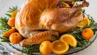

Home
Juicy Thanksgiving Turkey

About the Recipe
This juicy Thanksgiving turkey recipe uses orange wedges and aromatics to add flavor, while a champagne broth works its magic to keep the turkey moist and tender. My grandmother and mother passed this recipe on to me. It changes a little every Thanksgiving, because I’ve never written the recipe down before. But the roast turkey is always incredibly juicy and succulent.
Ingredients
- 2 tablespoons dried parsley
- 2 tablespoons ground dried rosemary
- 2 tablespoons rubbed dried sage
- 2 tablespoons dried thyme leaves
- 1 tablespoon lemon-pepper seasoning
- 1 tablespoon salt
- 1 (15 pound) whole turkey, neck and giblets removed
- 1 medium orange, cut into 8 wedges
- 1 medium onion, chopped into large pieces
- 1 medium carrot, cut into ½-inch slices
- 2 stalks celery, cut into ½-inch slices
- 1 (750 milliliter) bottle Champagne or dry sparkling wine
- 1 (14.5 ounce) can chicken broth